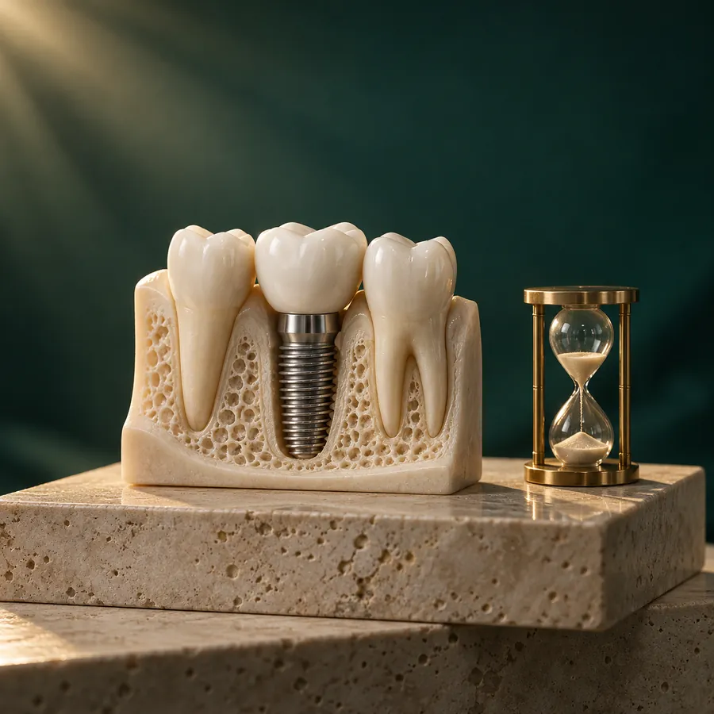

Имплантация
Сколько приживается зубной имплант: сроки и от чего они зависят
Приживление импланта в кости обычно занимает от 2–3 до 6 месяцев. На нижней челюсти срок чаще короче, на верхней — длиннее, а после наращивания кости он может увеличиться до полугода и больше. Дёсны заживают быстрее: первые недели уходят на мягкие ткани, а прочное соединение импланта с костью формируется месяцами. Точный срок для вашего случая хирург назовёт после диагностики и установки импланта, а затем подтвердит на контрольном осмотре.

Коротко
- Ориентир для кости — около 2–4 месяцев на нижней челюсти и 3–6 месяцев на верхней; с наращиванием кости срок обычно больше.
- Десна заживает за 1–3 недели, но это ещё не значит, что имплант прижился в кости.
- Срок зависит от челюсти, объёма и плотности кости, стабильности импланта при установке, курения, общего здоровья и гигиены.
- Нарастающая боль и отёк спустя несколько дней, температура, гной или подвижность импланта — повод связаться с врачом без ожидания планового визита.
Сколько приживается имплант: ориентировочные сроки
Под приживлением обычно понимают остеоинтеграцию — процесс, при котором кость плотно срастается с поверхностью импланта. Только после этого на имплант можно постепенно передавать полноценную жевательную нагрузку. Сроки ниже — общие ориентиры, которые используют стоматологи; в конкретной ситуации врач может назначить другой срок.
| Ситуация | Ориентир |
|---|---|
| Нижняя челюсть, кости достаточно | Обычно около 2–4 месяцев: кость здесь, как правило, плотнее. |
| Верхняя челюсть, кости достаточно | Обычно около 3–6 месяцев: кость здесь чаще менее плотная. |
| Имплант установлен вместе с наращиванием кости или синус-лифтингом | Часто 6 месяцев и больше; врач может разделить лечение на этапы. |
| Имплант установлен сразу после удаления зуба | Срок зависит от состояния лунки и кости; иногда он не отличается от обычного, иногда больше. |
| Временная коронка или протез установлены сразу | Приживление всё равно идёт месяцами; временная конструкция не означает, что имплант уже прижился. |
Таблица помогает понять порядок сроков, но не заменяет план лечения: срок для вашего случая врач определяет по снимкам, ходу операции и контрольным осмотрам.
Что происходит, пока имплант приживается
Первые дни и недели: заживает десна
После установки импланта в первые дни возможны отёк и дискомфорт, затем постепенно заживает десна. Если накладывали швы, их обычно снимают или оценивают на контрольном визите примерно через 1–2 недели. Внешне место операции может выглядеть зажившим уже через несколько недель, но процессы в кости только начинаются.
Первые месяцы: кость срастается с имплантом
Сначала имплант держится в кости за счёт плотной посадки при установке. Затем кость перестраивается и постепенно формирует новое соединение с его поверхностью. В этот период имплант особенно чувствителен к лишней нагрузке, поэтому врач объясняет, как жевать и чего избегать.
После приживления: ортопедический этап
Когда врач подтверждает, что имплант стабилен, начинается следующий этап: устанавливают формирователь десны или абатмент, снимают слепки или сканируют и изготавливают постоянную коронку или протез. Поэтому общий срок имплантации — от консультации до постоянной коронки — больше, чем срок самого приживления.
От чего зависит срок приживления
Челюсть и участок
Кость нижней челюсти обычно плотнее, поэтому имплант там часто приживается быстрее. На верхней челюсти, особенно в области жевательных зубов, кость бывает более мягкой, и врач может закладывать больше времени.
Объём и качество кости
После потери зуба кость постепенно убывает. Если её недостаточно, может понадобиться наращивание кости или синус-лифтинг. Такие вмешательства увеличивают общий срок лечения: новой кости тоже нужно время, чтобы сформироваться.
Стабильность импланта при установке
Насколько прочно имплант зафиксирован в момент операции, влияет на выбор протокола: можно ли сразу ставить временную конструкцию или лучше дать импланту зажить без нагрузки. Это решение принимает хирург во время и после установки.
Курение и общее здоровье
Курение ухудшает кровоснабжение тканей и считается одним из факторов риска осложнений. На заживление также могут влиять сахарный диабет, особенно некомпенсированный, остеопороз, лучевая терапия в области головы и шеи и некоторые лекарства, влияющие на костную ткань. Обязательно расскажите хирургу о своих заболеваниях и препаратах до операции.
Гигиена и выполнение рекомендаций
Воспаление тканей вокруг импланта и лишняя нагрузка в период приживления могут нарушить процесс. Бережная гигиена, отказ от жевания на стороне операции в рекомендованный срок и контрольные визиты помогают снизить риск.
Какие ощущения возможны после установки импланта
В первые дни после операции часто бывают отёк, умеренная боль и чувство дискомфорта в области вмешательства. Отёк нередко сильнее всего на 2–3 день, затем постепенно уменьшается. В первые сутки возможна небольшая кровоточивость. Врач заранее расскажет, какие ощущения ожидаемы в вашем случае и какие обезболивающие можно принимать.
Когда ткани зажили, имплант обычно не болит и не ощущается как что-то отдельное. Приживление в кости проходит без отдельных ощущений, поэтому его нельзя оценить по самочувствию — для этого нужен контрольный осмотр.
Как не помешать импланту прижиться
- Выполняйте рекомендации хирурга: именно они учитывают ваш вид операции, количество имплантов и состояние здоровья.
- Не жуйте на стороне операции, пока врач этого не разрешит. Первое время выбирайте мягкую пищу комфортной температуры.
- Откажитесь от курения хотя бы на период заживления; лучше обсудить это с врачом ещё до операции.
- Чистите зубы бережно и так, как показал врач. Не трогайте место операции языком, пальцами или зубочисткой.
- Принимайте лекарства только по назначению врача и не отменяйте назначенные препараты самостоятельно.
- Приходите на контрольные визиты, даже если ничего не беспокоит.
Эти правила общие. Если в выданных вам рекомендациях написано иначе, ориентируйтесь на рекомендации своего хирурга.
Когда нужно связаться с врачом
Свяжитесь с клиникой как можно скорее, если боль или отёк не уменьшаются, а нарастают спустя 3–4 дня после операции, повысилась температура, появились гной или неприятный привкус, кровотечение не останавливается, онемение губы или подбородка не проходит после окончания действия анестезии, а также если имплант, формирователь или временная конструкция стали подвижными. Сообщите о симптомах и не ждите планового визита.
Экстренная медицинская помощь нужна, если отёк быстро распространяется к глазу или на шею, затрудняет дыхание, глотание или речь. В такой ситуации вызывайте скорую помощь по номеру 112. Не ограничивайтесь заявкой через форму на сайте.
Как врач понимает, что имплант прижился
Ощущения пациента не показывают, завершилась ли остеоинтеграция. На контрольном визите врач осматривает десну, при необходимости назначает рентгеновский снимок и оценивает стабильность импланта. Если всё в порядке, начинается ортопедический этап и подбор постоянной коронки или протеза.
Иногда имплант не приживается. Это бывает нечасто, а причины связаны с состоянием кости, воспалением, нагрузкой или общим здоровьем. В таком случае врач объяснит, можно ли повторить имплантацию и что для этого потребуется. Подробнее об этапах, вариантах и стоимости лечения — на странице имплантации зубов.
К кому обратиться по имплантации в Балашихе
В «Зубной Гармонии» по адресу Балашиха, ул. Реутовская, 14 можно записаться на консультацию по имплантации или на осмотр, если имплант уже установлен и вас что-то беспокоит. Позвоните по номеру +7 (916) 862-94-94 или воспользуйтесь формой записи. Перед лечением врач проведёт диагностику и расскажет, какой срок приживления ожидается именно в вашем случае.
Седых Евгений Игоревич
хирург-имплантолог
Опыт работы с 2015 года
Планирует и выполняет хирургический этап имплантации после консультации и диагностики, работает с восстановлением зубного ряда на имплантах.
Частые вопросы
Можно ли поставить коронку сразу после установки импланта?
Иногда врач устанавливает временную коронку или протез в день операции или в ближайшие дни, если имплант достаточно стабилен. Но постоянную конструкцию обычно делают после приживления, а временная в этот период нагружается щадяще.
Больно ли, когда имплант приживается?
Дискомфорт и отёк обычно связаны с первыми днями после операции. Сам процесс приживления в кости, как правило, не ощущается. Если боль появилась или усилилась спустя время, это повод показаться врачу.
Сколько придётся ходить без зуба?
Это зависит от того, где находится имплант и возможна ли временная конструкция. В зоне улыбки врач обычно обсуждает временное эстетическое решение заранее, на консультации.
Можно ли ускорить приживление?
Ускорить процесс в кости нельзя, но можно не мешать ему: не курить, не нагружать имплант раньше срока, соблюдать гигиену и приходить на контрольные визиты. Сократить срок без оснований — значит повысить риск осложнений.
Сколько длится вся имплантация от консультации до коронки?
К сроку приживления добавляются диагностика, возможная подготовка кости и изготовление коронки или протеза. Точный план и сроки врач обсуждает после осмотра и 3D-диагностики.
Планируете имплантацию?
Запишитесь на консультацию: врач оценит костную ткань, объяснит этапы и сроки лечения и предложит варианты восстановления.